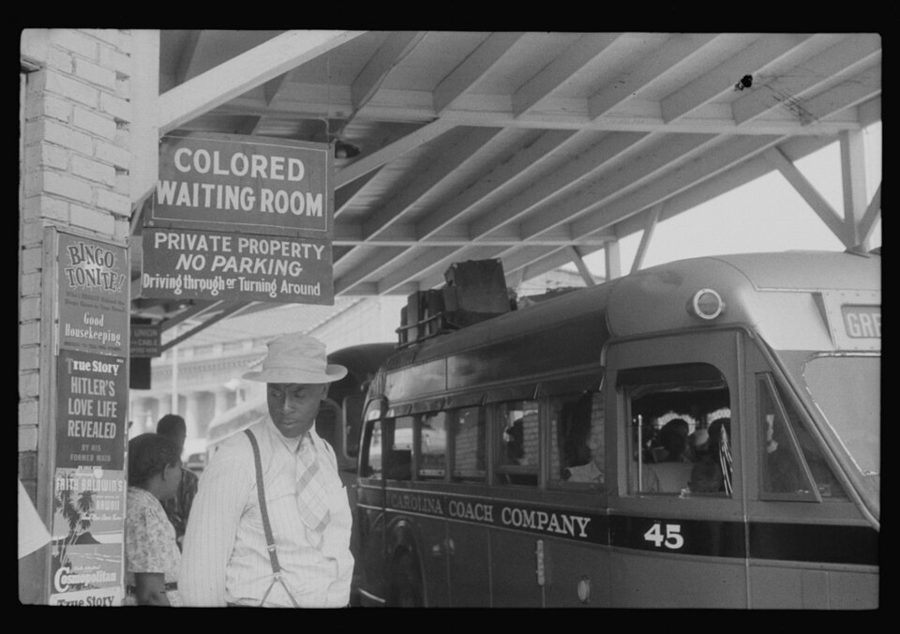
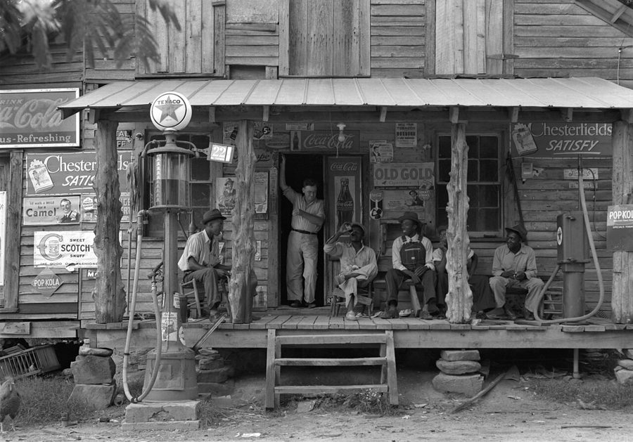
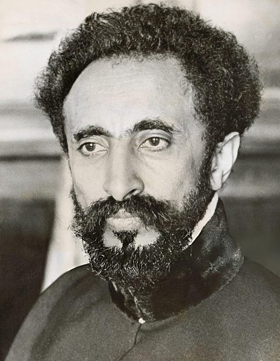
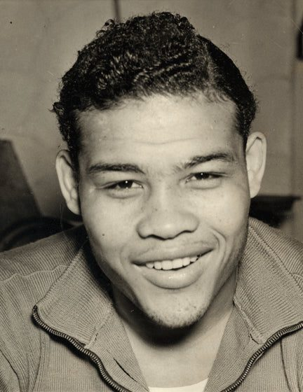
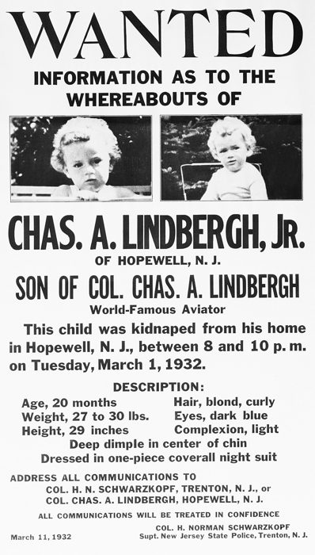

这一章在做什么
八岁以前，在北卡罗来纳。第 1 节用第三人称讲一个叫 Buddy 的婴儿怎样被送给亲戚养，读到这一节最后一句才交代那就是作者本人；从第 2 节起换成「我」。
后面是一个个短片段，顺序是：家里先是满的，然后人一个接一个去了北方。读的时候分清两套人：生他的，和养他的。
生他的一家
养他的一家（他以为的亲生父母）
Henry
父，他出生前去世
Willie
母，几年后去世
四个哥哥姐姐
知道有他，他不知道
Buddy
最小的
出生就抱走
Mama（Aunt Molly）
Henry 的姨妈，本名 Mamie Sowell
Daddy
建筑工人
Herman
四十出头
Ruth
三十上下
Birdie
二十多岁
Lacy
Birdie 的男友
Thomas Sowell
改了名，当亲生的养
Daddy 是不是三个大孩子的生父，书里没说
本站示意图。年龄是作者记事时的。Mama 的年纪更像祖母：她和作者的亲祖母是姐妹。
出场的人
听有声书的话，先把这些名字过一遍：光靠耳朵，Lacy 和 Willie 很容易听成一男一女反过来。
Mama Aunt Molly / Mamie Sowell 养母，按辈分是姨奶奶。识字不多，精明，情绪说变就变。第 1 节叫她 Aunt Molly，之后都叫 Mama。
Daddy 名字没有出现 养父，建筑工人，个子矮，最疼他。作者四五岁时和 Mama 分开。
Birdie /ˈbɜːrdi/ Mama 的小女儿，比他大二十岁。教他认字、哄他，实际上的母亲。
Lacy /ˈleɪsi/，男 Birdie 的男友，后来的丈夫。能说会道，常替他求情。这是个男人的名字。
Ruth /ruːθ/ Mama 的大女儿，话少，在白人家里做女佣。
Herman 和妻子 Iola /aɪˈoʊlə/、继女 Gladys Mama 的长子，有农场有车，和作者互相看不顺眼。
Henry 和 Willie Willie /ˈwɪli/，女 生父生母，只在第 1 节出现。Willie 在这里是女人的名字。
Bruno 一条母狗 白色的大狗。名字的来历见下面「报纸上的三件事」。
两个 Henry。 第 1 节的 Henry 是生父；讲上学的那一节又出来一个 Henry，是三年级的同班同学，长得和作者很像。两人没有关系。
背景：作者默认你知道的事
章名是一首歌
Carolina in the Morning 是 1922 年的流行歌，第一句是 Nothing could be finer than to be in Carolina in the morning （没有什么比清早身在卡罗来纳更美的了）。
美国人看到这个章名，耳边响起的是一支甜得发腻的怀乡曲。作者拿它来题一个没电、没热水、亲人不断离开的童年，而他又说那是一生中最快乐的几年。两层意思都是真的。
1930 年代的南方：隔离是法律

1940 年，北卡罗来纳州达勒姆的汽车站，「有色人种候车室」。离作者住的夏洛特两百公里左右，时间是他离开南方的第二年。
Jack Delano，公有领域，维基共享资源 南北战争后奴隶制在 1865 年废除，但南方各州随后用一整套法律把黑人和白人隔开：学校、车厢、候车室、饮水处各用各的。这套制度俗称 Jim Crow，一直持续到 1960 年代。
所以作者说小时候几乎见不到白人，并不夸张：住的街区、上的学校、去的教堂全是黑人。
法律之外还有私刑（lynching）。黑人男性只要被认为对白人女性有不规矩的举动，就可能被暴民吊死，凶手很少受罚。1955 年，14 岁的埃米特·蒂尔（Emmett Till）在密西西比州就是这样被杀的。
知道这一点，才读得懂白人小贩的女儿来玩那一节里 Mama 的那句话：她不是嫌孩子贪玩，是真的在怕。
没有电的房子

1939 年 7 月，北卡罗来纳州乡间的小店。右边那台是煤油泵，左边是汽油泵。土路、木板房、带顶的门廊，就是这一章里的样子。
Dorothea Lange，公有领域，维基共享资源 那时美国城里多数人家已经通了电，但南方黑人街区常常没有：街不铺路面，屋里烧柴做饭，点煤油灯（kerosene lamp），厕所在屋外，洗澡要在炉子上烧水倒进铁皮盆。
作者写这些不是诉苦。他反复说的是：周围人人如此，所以不觉得穷。这是他后来看待「贫困」的一个出发点，读的时候留意他的语气。
往北走
从 1910 年代到 1970 年前后，大约六百万南方黑人搬到北方和西部的城市，史称「大迁徙」（Great Migration）。通常是年轻人先去，找到工作站住脚，再把家里人一个个接过去。
这一章的后半就是这个过程落在一个孩子身上的样子：先是 Lacy，再是 Birdie、Ruth，最后轮到他和 Mama。
1930 1932 1934 1936 1938
Lacy 去纽约找工作
Daddy 和 Mama 分开，有时回来
Birdie 1934 在纽约结婚，1935 回来几个月
Ruth 1936 去纽约
Mama 我 1937.9 上学
1939.5 去纽约
1930.6 出生
本站示意图，年份按书里的说法估计，有的只能精确到「四五岁时」。色条画到谁离开夏洛特为止。
报纸上的三件事
家里大人议论的三条新闻，作者各用一两句带过，都是 1930 年代中期的头条。

埃塞俄比亚皇帝海尔·塞拉西，1935 年。美联社（存疑），公有领域，维基共享资源 
乔·路易斯，1937 年 6 月，夺冠前几天。美联社，公有领域，维基共享资源
意大利打埃塞俄比亚（1935–1936）。 墨索里尼的意大利入侵埃塞俄比亚。当时非洲几乎全是欧洲殖民地，埃塞俄比亚是极少数还独立的黑人国家，所以美国黑人普遍站在它一边。
乔·路易斯（Joe Louis）。 黑人重量级拳击手，1937 年成为世界冠军，卫冕到 1949 年。在黑人处处受限的年代，他是全国黑人的骄傲。书里写的是他还在往上打的时候。

1932 年 3 月新泽西州警方的告示，征集林德伯格幼子下落的线索。作者不详，公有领域，维基共享资源 林德伯格之子绑架案。 林德伯格（Charles Lindbergh）1927 年独自驾机从纽约飞到巴黎，是全美国的英雄。1932 年他二十个月大的儿子被人从家中掳走，后来发现已死。
德国移民 Bruno Richard Hauptmann（书里拼作 Hauptman）被定罪，1936 年坐电椅处死。此案当时号称「世纪罪案」。Mama 认定他冤枉，家里的狗就叫了 Bruno。
留个记号：后面还会回来
回忆录和小说不一样，作者会直接告诉你「这件事我后来常想起」。这一章有四处这样的话，先记下，后面的章节会用到。
狗和骨头 第 2 节 Birdie 念的故事，出自《伊索寓言》：叼着骨头的狗看见水里的倒影，想抢「另一条狗」的骨头，一张嘴，自己的掉了。
给小狗断奶 第 5 节 他按住 Bruno 不让它走，大人告诉他断奶是为小狗好。他说成年后多次想起这一幕。
Daddy 有多好 第 3 节 他说要过很多年才完全明白。为什么要「很多年」，留着这个问题。
他不知道自己是收养的 第 1 节 一直到成年前都不知道。真相什么时候、怎么揭开的，在第 2 章末尾。
词与短语
词条按书里出现的顺序排，小标题是原书用 • • • 隔开的各节。斜体小字是那句话里的几个词，在 Kindle 里搜它就能跳到那一句。单个的生词长按就能查，这里收的主要是词典帮不上忙的。
第 1 节 · Buddy 是谁
if he lived that long
… father again—if he lived that long. …
前提是他能活到那一天
全书第一句就是冷幽默的句式：先说一件平常事，破折号后面补一句要命的。
take the baby to raise
… would take the baby to raise. …
把孩子抱去养
没有手续的民间抱养。正式收养是 adopt。
the logical person to turn to
… the logical person to turn to. …
最该去找的人
turn to 某人 = 向他求助。logical 这里是「顺理成章」。
have little choice but to
… Willie had little choice but to …
别无选择，只能……
go through with
… to go through with the arrangements …
把说定的事照办到底
和 go through（经历）不同。多了 with，说的是一件心里不情愿、但还是办了的事。
much less
… was adopted, much less that Willie …
更不用说
前面必须是否定：不知道 A，更不知道 B。
come by
… the woman who came by unobtrusively …
顺道来一趟
unobtrusively：不惹人注意地。
supposedly
… supposedly to visit with the adults. …
名义上是
言下之意：实际不是。visit with 是美式说法，坐下来聊天。
spoiled
… and perhaps even spoiled, in his …
被惯坏了
spoil 用在孩子身上是「宠坏」，不是「毁坏」。
it was not to be
… But it was not to be. …
终究没能成
be to 表示后来注定发生的事。这一章还有 was to become 、was not to last ，全书都是这个用法。
possessive of
… was very possessive of the boy, …
把……看得很紧，不许别人沾
in any event
… her secret. In any event, she …
不管怎么说
和 event（事件）无关，= anyway。章末还有一次。
the family grapevine
… only through the family grapevine. …
亲戚之间传来传去的消息
grapevine 本义是葡萄藤。hear it through the grapevine = 听人辗转说起。
prevail upon
… Birdie prevailed upon Aunt Molly to …
说动，磨到对方答应
name him after
… to name him after her boy …
用……的名字给他取名
after 不是「之后」。Thomas 这个名字来自 Birdie 当时的男友，不是后来的 Lacy。
第 2 节 · 最早记得的人和房子
an elder in the church
… an elder in the church until …
教会里的长老
不是「年长的人」。新教教会里由信徒担任的管事职位。
came along
… the church until I came along. …
我出现了（来到这个家）
come down in family legend
… scenes that came down in family …
在家里一代代传讲下来
fuss with
… He would fuss with Mama if …
跟……吵，数落
不是「大惊小怪」。美国南方口语。would 表示过去常常。
spank
… that she had spanked me while …
打屁股
那个年代家里、学校里体罚孩子都很平常，这个词后面还会出现很多次。
in my general direction
… stick in my general direction while …
大致朝着我这边
general = 大概的。那人只是在给别人指路。
subject to
… emotional and subject to an unpredictable …
动不动就会（陷入某种状态）
the comics
… stories in the comics together, so …
报纸上的连环漫画
美国报纸每天有漫画栏，星期天是彩色整版（后面的 Sunday comics ）。pow、splash 是漫画里的拟声词：砰、哗。
mothering
… most of the mothering I received …
母亲那样的照料
a worldly air about her
… a more worldly air about her. …
一副见过世面的样子
air = 神态、派头。
play rough-house
… I sometimes played rough-house together, as …
打打闹闹地玩
debonair
… was a debonair young man with …
潇洒，风度翩翩
读 /ˌdebəˈner/，重音在最后，听书时不容易认出来。
a gift for words
… with a gift for words and …
能说会道
gift = 天分。
very much in need of changing
… diapers very much in need of …
（尿布）早就该换了
用一本正经的书面语说一件狼狈的事，是作者的招牌写法。
formative years
… influence in my formative years, especially …
性格成形的那些年
broke up
… Daddy and Mama broke up and …
（两口子）分开了
charm Mama out of punishing me
… many times charmed Mama out of …
把 Mama 哄得不罚我了
talk / charm 某人 out of doing ：劝得、哄得他不做某事。
stuffy
… a dignified, even stuffy, individual. …
古板，端着
本义是空气闷。
not a fan of mine nor I of his
… not a fan of mine nor …
他不喜欢我，我也不喜欢他
后半句省略了：nor (was) I (a fan) of his。下一句说两人见不着面也都没显出难受，是同一种正话反说。
genteel
… with a certain genteel quality, and …
斯文，有体面人家的派头
不是 gentle（温柔）。读 /dʒenˈtiːl/。
a mere girl
… of having a mere girl holding …
区区一个小丫头
这是四五岁的他的口气，作者在拿当年的自己开玩笑。
born after slavery
… of our family born after slavery. …
奴隶制废除以后出生的
1865 年废除。Mama 那一辈是头一代生下来就是自由人的。
marks of distinction
… Both were marks of distinction in …
比别家体面的标志
指铺了路面的走道和厨房门上的小窗。
frills
… had no such frills as electricity, …
可有可无的花哨东西
本义是衣服的花边。把电和热水叫 frills，又是反着说。
hot running water
… central heating, or hot running water. …
热的自来水
running water = 自来水，不是「流动的水」。
it never occurred to me that
… It never occurred to me that …
我从没想到过
tag along with
… Once I tagged along with Ruth …
跟在……后面一起去
没人特意带，自己跟着的。
faucet
… I saw two faucets in their …
水龙头
美国说 faucet，英国说 tap。读 /ˈfɔːsɪt/。
they sure must
… “They sure must drink a lot …
他们肯定……
sure 当副词用是口语，书面是 surely。
第 3 节 · 报纸上的事，和 Daddy
coming along
… young black boxer coming along and …
正在冒头
和上面的 came along （出现）是同一个短语的另一个意思：进展、成长。
for reasons unknown
… For reasons unknown, she became convinced …
不知道为什么
had pups
… Later, Bruno had pups. …
生了小狗
have 用在动物身上 = 生。pup = puppy。前一句刚说它是母狗却叫 Bruno，这四个词是包袱。
nothing came of it
… “yes,” but nothing came of it. …
后来没了下文
第 4 节 · 啤酒
courting
… Birdie and Lacy were courting, they …
谈恋爱
老派说法，现在说 dating。
the swing on the front porch
… in the swing out on the …
前门廊上的秋千椅
南方的房子正面有一道带顶的门廊（porch），常挂一张能坐两三个人的长椅秋千，傍晚坐在上面乘凉。
look up to
… of Lacy and looked up to him, …
敬佩
high-spirited
… and Lacy were high-spirited young people …
爱玩爱闹
不是「精神高尚」。spirits = 兴致。
take them up on it
… However, I took them up on …
把他们的话当了真，接了这个条件
take 某人 up on an offer ：对方提了个条件，你说「行，就这么办」。
down
… it and quickly downed some whisky …
一口灌下去
down 作动词。
pretty potent stuff
… combination was pretty potent stuff for …
劲儿相当大的东西
sleep it off
… lie down and I slept it off …
睡一觉把酒劲睡过去
第 5 节 · 断奶
nurse from
… when they wanted to nurse from …
吃（母狗的）奶
nurse 作动词是喂奶、吃奶，和护士无关。
wean
… was of course starting to wean …
断奶
读 /wiːn/。这一节的关键词。
a mean way to treat
… seemed like a mean way to …
很狠心的对待方式
mean 作形容词：刻薄、狠心。
pounce on
… Finally, I pounced on Bruno and …
猛扑上去
第 6 节 · 世界变小了
my world began to contract
… my world began to contract painfully. …
我的世界开始缩小
contract 作动词是收缩，重音在后 /kənˈtrækt/，不是合同。
have a foothold
… Once he had a foothold, he …
站住了脚
send for
… a foothold, he sent for Birdie …
捎信叫……过去
大迁徙的标准流程：一个人先去，再 send for 家里人。
for good
… to New York again, for good. …
再也不回来了
和「好」无关，= 永久地。
come down with
… worse, I came down with mumps …
染上（病）
mumps 腮腺炎，whooping cough 百日咳。
tongue-tied and flustered
… I was tongue-tied and flustered, but …
张口结舌，手足无措
collapse like a house of cards
… She collapsed like a house of …
像纸牌搭的房子一样，一下子垮了
anything less
… Ruth’s spanking me for anything less. …
比那更轻的错
整句的意思：我不信自己会去抽她脚下的梯子，可要不是这么大的事，Ruth 不会打我。
第 7、8 节 · 闹鬼的房子
relatives by marriage
… our more prosperous relatives by marriage. …
姻亲
of advanced years
… were usually of advanced years when …
上了年纪
a force to be reckoned with
… was a force to be reckoned …
一股不能不当回事的力量
for my benefit
… cotton plant, apparently for my benefit, …
专为让我看的
不是「为我的利益」。for 某人's benefit ：做给他看、说给他听。
brave the haunted house
… had decided to brave the haunted …
壮着胆子去那座闹鬼的房子
brave 作动词：硬着头皮面对。
silhouette
… and saw Mama’s silhouette coming down …
剪影，逆光里的人形
读 /ˌsɪluˈet/。coming down the hall ：沿着走廊走过来，hall 是走廊。
many a laugh
… We enjoyed many a laugh recounting …
笑了一回又一回
many a + 单数名词 = 很多，书面语。
第 9 节 · 小贩的女儿
peddler
… A white fruit-and-vegetable peddler came by …
走街串巷的小贩
make his rounds
… her father made his rounds on …
照固定路线挨家走一遍
医生查房、邮递员送信也是 make rounds 。
hit it off
… We hit it off wonderfully, had …
一见面就合得来
enthuse about
… to Mama to enthuse about my …
兴冲冲地讲
gallows
… first step toward the gallows,” she …
绞刑架
读 /ˈɡæloʊz/。见上面「隔离是法律」。
第 10 节 · 上学
out of place
… feel awkward and out of place. …
格格不入，浑身不自在
go along quietly enough
… I went along quietly enough with …
还算老实地跟着走
副词后面加 enough，常预告下面有个「可是」。
in no uncertain terms
… told her in no uncertain terms …
毫不含糊地
双重否定。terms = 措辞。
some girl
… going to have some girl bring …
随便哪个丫头片子
some + 单数名词，带着瞧不上的口气。
resort to
… not enough, I resorted to throwing …
只好动用（不大光彩的办法）
in splendid isolation
… arrived at school in splendid isolation. …
独自一人，神气十足
原是形容 19 世纪末英国不结盟的外交政策。拿来写一个扔石头赶跑小姑娘的一年级学生，是自嘲。
have a crush on
… by the teacher, having crushes on …
偷偷喜欢上
work to my advantage
… happened to work to my advantage …
反倒对我有利
issue a book to
… such thing as issuing a book …
给（每个孩子）发一本书
issue 作动词：发放。全班轮着念同一本。
act up
… of the kids were acting up, …
调皮捣蛋
in a pique
… the teacher said in a pique …
一气之下
读 /piːk/，和 peak 同音。
be stuck with
… for me to be stuck with, …
被迫跟……绑在一起
promoted
… to have me promoted immediately into …
升到（上一个年级）
用在学生身上是升级，这里是跳级。美国小学一年级到六年级叫 first grade … sixth grade。
come in handy
… class, which came in very handy. …
派上了用场
rub … the wrong way
… boys in class the wrong way …
惹毛了……
字面是逆着毛摸。
jump on
… but he jumped on Henry by …
扑上去打
have no inkling
… course I had no inkling as …
一点也没想到
第 11 节 · 去纽约
The Lone Ranger
… radio program called “The Lone Ranger.” …
《独行侠》
1930 年代风靡全国的西部广播剧，蒙面的骑警和他的白马。前面提到的 Bing Crosby 是当时最红的歌手。
brats
… awful and their children were brats. …
讨人嫌的熊孩子
for all I know
… to New York. For all I know, …
说不定（我其实不清楚）
before the school year was out
… left before the school year was …
学年还没结束
out = 结束。美国的学年九月开始，六月结束。
Mother’s Day
… was out, on Mother’s Day, 1939. …
母亲节
五月的第二个星期日，1939 年是 5 月 14 日。
wasn’t overjoyed
… and he probably wasn’t overjoyed at …
想必也不怎么乐意
「没有欣喜若狂」= 很不乐意。这种往轻里说的写法（understatement）全书都是，要反着读。
值得停下来的句子
“You’ve just taken your first step toward the gallows,” she said.— 第 9 节，Mama 看见他和白人小贩的女儿玩了一下午之后。本站译：「你刚朝绞刑架迈出了第一步。」
句子本身不难，难的是分量。一个六七岁的孩子兴冲冲回头，听到的是这句话。作者没有解释，也没有评论，下一句只写从此那个女孩再来时他总是「不在」。
这是全章唯一一处种族隔离直接落到他身上的地方，他处理得和写尿布、写啤酒一样平。这本书讲到种族时一直是这个音量，先适应它。
But we were too poor to be able to afford superstition, so that was where we went.— 第 7 节，搬进亲戚们都不敢住的那座房子。本站译：可我们穷得连迷信都迷信不起，所以就搬去了那儿。
too … to … 套 afford ：迷信成了一种要花钱才享受得起的东西。别人嫌房子不吉利可以不住，他们没得挑。
这是一句经济学家的玩笑，讲的是「代价」。作者后来的书里这种句子很多，这是书里的头一个。
检查一下理解
先在心里答，再点开。答错的那题，回书里把那一节再读（或再听）一遍。
1. 作者叫 Mama 的人，和他有血缘关系吗？是什么关系？ 有。她是生父 Henry 的姨妈，也就是他的姨奶奶。他一直以为她是亲生母亲，而她的年纪其实更像祖母。
2. 在白人家看到两个水龙头，他为什么说「这家人一定喝很多水」？ 他只见过一个龙头的厨房，以为两个龙头就是要用双份的水。他不知道世上有从龙头里流出来的热水。这是在写他当时的世界有多小，不是在写他笨。
3. 「穷得迷信不起」是说他们家不迷信吗？ 不是。那一句说的是没得选：别的亲戚可以因为忌讳不搬进去，他们只租得起这里。至于他本人从此觉得迷信可笑，是下一节那位亲戚敲了门就逃的事带来的。
4. 老师把他从二年级直接调到三年级，是因为发现他是天才吗？ 不是。那天全班在胡闹，老师一气之下说不该把他和这帮孩子放在一起，就把他送走了。他能跳级的本钱是 Birdie 在他四岁前教会了他认字；他自己说这是一套死板的规矩碰巧帮了他。
5. 班上那个男生想揍作者，结果怎样？ 他认错了人，扑到了同学 Henry 身上，而 Henry 是全班最能打的。此后没人敢再试，作者三年级就少打了很多架。注意这个 Henry 不是第 1 节的生父。
6. 作者说北卡罗来纳这几年是他一生中最快乐的时候。这和章末的气氛矛盾吗？ 不矛盾，是前后两段。最快乐的是 East Hill Street 那座木屋里五个大人围着他的时候；四五岁以后人一个个离开，他把后面叫作「忧郁的时期」。章末搬回老房子隔壁，看见 Daddy 当年铺的走道，写的就是这个落差。